Cargamos los datos y paquetes que necesitamos
library(tidyverse)
library(sjmisc)
library(haven)
library(VIM)
library(kableExtra)
library(skimr)
library(sjPlot)
library(naniar)
library(ggcorrplot)
library(naniar)
library(plyr)
library(dplyr) # df manipulation
library(texreg) # model evaluation
library(MASS) # ordinal regression
library(nnet) # multinomial regression
library(moderndive) # get_regression_table
library(broom)Cargamos los datos:
rm(list = ls())
ind_con_control <- read_sav("data/var_independientes_y_control.sav")
dep_pca_total <- read_sav("data/var_dependientes_total_pca.sav")
dep_pca_importancia <- read_sav("data/var_dependientes_importancia_pca.sav")
dep_pca_preocupacion <- read_sav("data/var_dependientes_preocupacion_pca.sav")
dep_total_clean <- read_sav("data/var_dependientes_total_clean_unreduced_final.sav")1 Construcción de modelo
Juntamos los dataframes:
reg_pca_total <- merge(ind_con_control, dep_pca_total,
by = 'row.names', all = TRUE)
reg_pca_importancia <- merge(ind_con_control, dep_pca_importancia,
by = 'row.names', all = TRUE)
reg_pca_preocupacion <- merge(ind_con_control, dep_pca_preocupacion,
by = 'row.names', all = TRUE)
dep_total_clean <- merge(ind_con_control, dep_total_clean,
by = 'row.names', all = TRUE)Conceptos basicos para modelos de regresion
Nuestra variable dependiente es continua ya que se toma el promedio.
Requisitos para regresión múltiple:
- Tamano muestral elevado de minimo 500 observaciones. Tenemos 6466 observaciones asi que satisfacemos eso.
- Variable dependiente tiene que ser continua o dicotómica
- Mejor es ver relacion individual entre VD y VI y despues anadir al set de componentes
- No anadir variables innecesarias!
- Para tener variables significativas , el p < 0.05
1.1 Modelo regresión lineal PCA
Vemos que el plot no muestra alguna relación linear. Es algo esperado ya que nuestra variable independiente no es parametrica. Vemos que el indice del PCA esta distribuido por todas partes sin mostral algúna relación con las zonas. Aún asi es posible correr un modelo de regresión lineal múltiple, ya que la regresión sirve como una manera de predecir cuanto incrementa nuestra variable dependiente cuando tienes un incremento de una unidad en nuestra variable(s) independientes. Es decir, la linearidad en regresión asume que es esta relación entre variable dependiente y independiente estan correlacionadas, por la cual es un suposición de nuestro modelo.
Corremos los modelos y controlamos sobre las variables confundidores para ver si aún asi hay alguna significancia estadistica.
reg_pca_total %>%
ggplot(aes(x = as_factor(ZONAS), y = indice_01)) +
geom_jitter(shape = 16, position = position_jitter(0.2), color = "#588157") +
geom_point(fill = "#a3b18a", color = "#3a5a40", alpha = 0.5) +
labs(title = "Zonas vs Indice PCA 01" ,x = "Zonas", y ="Indice PCA 01") +
theme_minimal(base_family = "Roboto Condensed")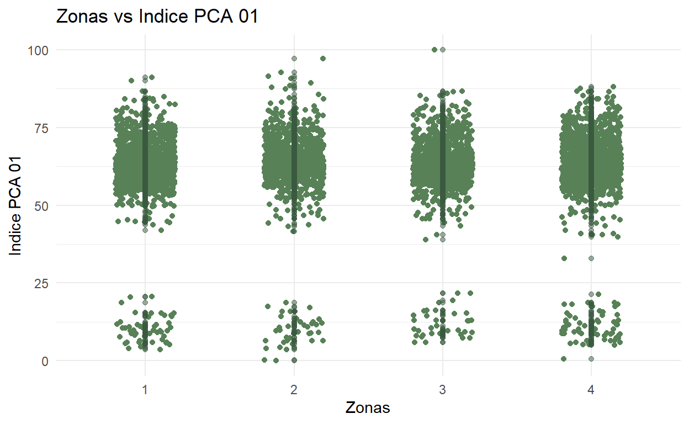
reg_pca_total %>%
ggplot(aes(x = as_factor(ZONAS), y = indice_02)) +
geom_jitter(shape = 16, position = position_jitter(0.2), color = "#588157") +
geom_point(fill = "#a3b18a", color = "#3a5a40", alpha = 0.5) +
labs(title = "Zonas vs Indica PCA" ,x = "Zonas", y ="Indica PCA") +
theme_minimal(base_family = "Roboto Condensed")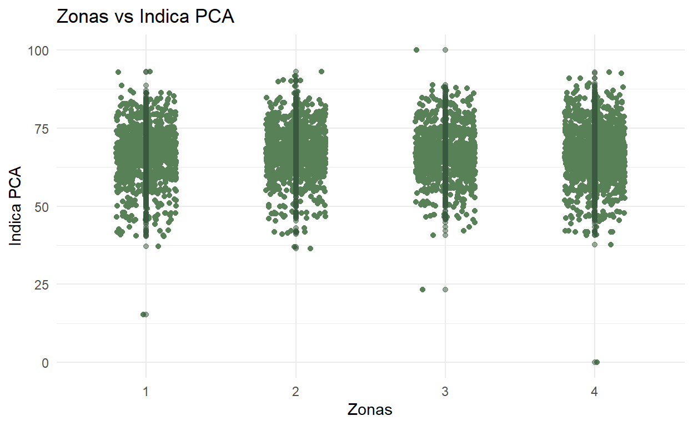
Las Zonas de Chile no parecen tener ningúna significancia estadistica. Su valor-p > 0.05, indicando que nuestra hipótesis nula es cierta (la percepción no cambia entre zonas). Es mas, el \(R^{2}\) ajustado es de 0. No hay ningúna significancia.
modelo_pca_tot_1 <- lm(indice_01 ~ 1 + ZONAS, data = reg_pca_total, na.action = na.exclude)
modelo_pca_tot_2 <- lm(indice_02 ~ 1 + ZONAS, data = reg_pca_total, na.action = na.exclude)
modelos_pca_tot <- list(modelo_pca_tot_1, modelo_pca_tot_2)
screenreg(modelos_pca_tot)
=====================================
Model 1 Model 2
-------------------------------------
(Intercept) 61.60 *** 66.78 ***
(0.33) (0.22)
ZONAS 0.04 0.07
(0.12) (0.08)
-------------------------------------
R^2 0.00 0.00
Adj. R^2 -0.00 -0.00
Num. obs. 6130 6130
=====================================
*** p < 0.001; ** p < 0.01; * p < 0.05Controlamos por las variables confundidoras mas relevantes según la literatura. Esto seria, el nivel socio-economico (NSE), el nivel de educación, y la edad.
Tampoco las variables confundidoras parecen tener alguna significancia estadistica.
modelo_pca_tot_1_2 <- lm(indice_01 ~ 1 + ZONAS + NSE + Edad + Niv_Edu, data = reg_pca_total, na.action = na.exclude)
modelo_pca_tot_2_2 <- lm(indice_02 ~ 1 + ZONAS + NSE + Edad + Niv_Edu, data = reg_pca_total, na.action = na.exclude)
modelos_pca_tot_2 <- list(modelo_pca_tot_1_2, modelo_pca_tot_2_2)
screenreg(modelos_pca_tot_2)
=====================================
Model 1 Model 2
-------------------------------------
(Intercept) 61.45 *** 66.35 ***
(1.10) (0.72)
ZONAS 0.04 0.06
(0.12) (0.08)
NSE 0.10 0.14
(0.17) (0.11)
Edad -0.00 -0.00
(0.01) (0.01)
Niv_Edu 0.00 0.02
(0.09) (0.06)
-------------------------------------
R^2 0.00 0.00
Adj. R^2 -0.00 -0.00
Num. obs. 6130 6130
=====================================
*** p < 0.001; ** p < 0.01; * p < 0.05Anadimos todas las variables confundidoras que tenemos. Esto va con el riesgo que hacemos un overfit de nuestro modelo, a nuestros datos especificos. Aún asi, hacemos esto para ver si hay algúna relevancia.
Sacamos los nombres de todos las variables independientes:
colnames(ind_con_control) [1] "ZONAS" "NSE"
[3] "Edad" "Niv_Edu"
[5] "Estudiante" "Trab_Ingr"
[7] "Religion" "Razon_Bici"
[9] "Automovil_Combustible" "Transporte_mas_freq" Interesantemente, solo el uso de transporte mas frecuente tiene una significancia estadistica con valor-p <0.05. Continuamos con nuestra investigacion inicial, pero vamos a ver a esta hipótesis, el uso de transporte afecta tu percepción sobre el cambio climatico, luego. Lo mantenemos en el fondo de nuestras mentes.
modelo_pca_tot_1_3 <- lm(indice_01 ~ 1 + ZONAS + NSE + Edad + Estudiante + Niv_Edu + Razon_Bici + Trab_Ingr + Religion + Razon_Bici + Automovil_Combustible + Transporte_mas_freq + Religion, data = reg_pca_total, na.action = na.exclude)
modelo_pca_tot_2_3 <- lm(indice_02 ~ 1 + ZONAS + NSE + Edad + Estudiante + Niv_Edu + Razon_Bici + Trab_Ingr + Religion + Razon_Bici + Automovil_Combustible + Transporte_mas_freq + Religion, data = reg_pca_total, na.action = na.exclude)
modelos_pca_tot_3 <- list(modelo_pca_tot_1_3, modelo_pca_tot_2_3)
screenreg(modelos_pca_tot_3)
===============================================
Model 1 Model 2
-----------------------------------------------
(Intercept) 63.51 *** 68.23 ***
(1.91) (1.24)
ZONAS 0.01 0.01
(0.16) (0.10)
NSE -0.27 -0.20
(0.24) (0.15)
Edad -0.01 -0.00
(0.01) (0.01)
Estudiante 0.03 -0.22
(0.56) (0.36)
Niv_Edu -0.08 -0.00
(0.12) (0.08)
Razon_Bici -0.10 -0.00
(0.07) (0.05)
Trab_Ingr 0.09 0.03
(0.10) (0.06)
Religion 0.04 0.01
(0.10) (0.06)
Automovil_Combustible 0.04 -0.05
(0.28) (0.18)
Transporte_mas_freq -0.04 -0.16 *
(0.12) (0.07)
-----------------------------------------------
R^2 0.00 0.00
Adj. R^2 -0.00 -0.00
Num. obs. 3602 3602
===============================================
*** p < 0.001; ** p < 0.01; * p < 0.05Almenos vemos que no hay sesgo en la predicción.
ggplot(mapping = aes(x = modelo_pca_tot_2_3$fitted.values, y = modelo_pca_tot_2_3$residuals)) +
labs(x = "Valores predichos", y = "Residuos") +
geom_point() +
geom_hline(mapping = aes(yintercept = 0), color = "red")Cuando solo el uso de transporte mas frecuente, incluyendo variables confundidoras mas relevantes, vemos que ya no es significante. Mejor no cambiar la hipotesis ya que la significancia depende de controlar (y overfit) el modelo a nuestros datos.
modelo_pca_tot_2_4 <- lm(indice_02 ~ 1 + Transporte_mas_freq, data = reg_pca_total, na.action = na.exclude)
modelo_pca_tot_2_5 <- lm(indice_02 ~ 1 + Transporte_mas_freq + Edad + NSE + Niv_Edu, data = reg_pca_total, na.action = na.exclude)
modelos_pca_tot_2_4_5 <- list(modelo_pca_tot_2_4, modelo_pca_tot_2_5)
screenreg(modelos_pca_tot_2_4_5)
=============================================
Model 1 Model 2
---------------------------------------------
(Intercept) 67.14 *** 66.67 ***
(0.18) (0.71)
Transporte_mas_freq -0.06 -0.06
(0.05) (0.05)
Edad -0.00
(0.01)
NSE 0.14
(0.11)
Niv_Edu 0.02
(0.06)
---------------------------------------------
R^2 0.00 0.00
Adj. R^2 0.00 -0.00
Num. obs. 6130 6130
=============================================
*** p < 0.001; ** p < 0.01; * p < 0.05Modelo regresión lineal PCA total filtrando outliers
Vemos que la distribución de los dos indices que creamos en la exploración son un poco diferentes. En el primer indice hay un grupo de datos separados del resto, con un valor entre 0 y 25. En el indice 2 vemos un comportamiento similar, solo que esto grupo es mas pequeno. Podemos ver, si filtramos estos datos si el modelo tendria mas significancia.
La cantidad de valores bajo el 25 para el indice 1, es de 186, un 3 % de nuestros datos. Para el indice 2 es un 0.05 % de nuestros datos. Asumo que es tan minimo, que filtrar estos subsets no afectaria la predicción del modelo.
reg_pca_total_filter_indice1 <- reg_pca_total[reg_pca_total$indice_01 >25, ]
reg_pca_total_filter_indice2 <- reg_pca_total[reg_pca_total$indice_02 >25, ]Aún, no parece haber ningúna significancia estadistica.
modelo_pca_tot_1_filtered <- lm(indice_01 ~ 1 + ZONAS, data = reg_pca_total_filter_indice1, na.action = na.exclude)
modelo_pca_tot_2_filtered <- lm(indice_02 ~ 1 + ZONAS, data = reg_pca_total_filter_indice2, na.action = na.exclude)
modelos_pca_tot_filtered <- list(modelo_pca_tot_1_filtered, modelo_pca_tot_2_filtered)
screenreg(modelos_pca_tot_filtered)
=====================================
Model 1 Model 2
-------------------------------------
(Intercept) 63.27 *** 66.80 ***
(0.19) (0.22)
ZONAS 0.01 0.07
(0.07) (0.08)
-------------------------------------
R^2 0.00 0.00
Adj. R^2 -0.00 -0.00
Num. obs. 5944 6127
=====================================
*** p < 0.001; ** p < 0.01; * p < 0.05Modelo regresión lineal PCA con ordinal smooth
Modelo regresión lineal PCA preocupacion
Vemos una distribución muy uniforme entres las diferentes zonas. Esto ya indica que no va a hay una relación concreta entre nuestra variable independiente, y dependiente. Sin embargo, si controlamos sobre las variables confundidoras, podriamos tener alguna significancia.
reg_pca_preocupacion %>%
ggplot(aes(x = as_factor(ZONAS), y = indice_01)) +
geom_jitter(shape = 16, position = position_jitter(0.2), color = "#588157") +
geom_point(fill = "#a3b18a", color = "#3a5a40", alpha = 0.5) +
labs(title = "Zonas vs Indica PCA" ,x = "Zonas", y ="Indica PCA") +
theme_minimal(base_family = "Roboto Condensed")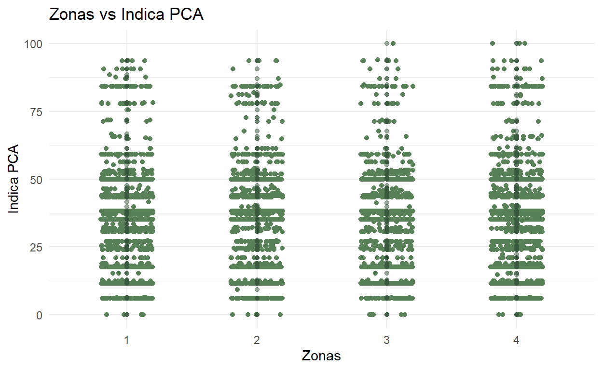
reg_pca_preocupacion %>%
ggplot(aes(x = as_factor(ZONAS), y = indice_02)) +
geom_jitter(shape = 16, position = position_jitter(0.2), color = "#588157") +
geom_point(fill = "#a3b18a", color = "#3a5a40", alpha = 0.5) +
labs(title = "Zonas vs Indica PCA" ,x = "Zonas", y ="Indica PCA") +
theme_minimal(base_family = "Roboto Condensed")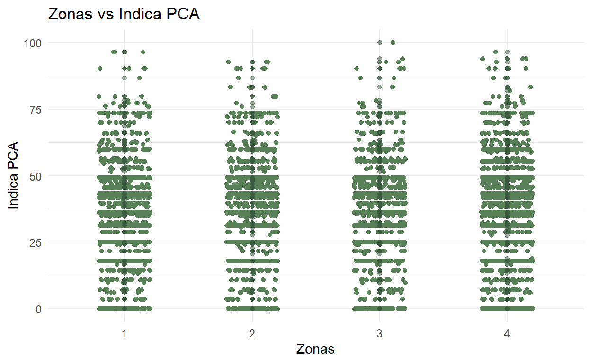
El modelo no parece tener algúna relevancia. Nuestra hipótesis, que la zona puede predecir el nivel de preocupación no parece ser valida.
modelo_pca_preo_1 <- lm(indice_01 ~ 1 + ZONAS, data = reg_pca_preocupacion, na.action = na.exclude)
modelo_pca_preo_2 <- lm(indice_02 ~ 1 + ZONAS, data = reg_pca_preocupacion, na.action = na.exclude)
modelos_pca_preo <- list(modelo_pca_preo_1, modelo_pca_preo_2)
screenreg(modelos_pca_preo)
=====================================
Model 1 Model 2
-------------------------------------
(Intercept) 34.84 *** 35.93 ***
(0.52) (0.50)
ZONAS 0.17 0.16
(0.18) (0.17)
-------------------------------------
R^2 0.00 0.00
Adj. R^2 -0.00 -0.00
Num. obs. 6130 6130
=====================================
*** p < 0.001; ** p < 0.01; * p < 0.05modelo_pca_preo_1_2 <- lm(indice_01 ~ 1 + ZONAS + NSE + Edad + Niv_Edu, data = reg_pca_preocupacion, na.action = na.exclude)
modelo_pca_preo_2_2 <- lm(indice_02 ~ 1 + ZONAS + NSE + Edad + Niv_Edu, data = reg_pca_preocupacion, na.action = na.exclude)
modelos_pca_preo_2 <- list(modelo_pca_preo_1_2, modelo_pca_preo_2_2)
screenreg(modelos_pca_preo_2)
=====================================
Model 1 Model 2
-------------------------------------
(Intercept) 34.57 *** 34.54 ***
(1.72) (1.64)
ZONAS 0.16 0.15
(0.18) (0.18)
NSE 0.34 0.43
(0.26) (0.25)
Edad -0.01 -0.00
(0.01) (0.01)
Niv_Edu -0.01 0.07
(0.14) (0.13)
-------------------------------------
R^2 0.00 0.00
Adj. R^2 0.00 0.00
Num. obs. 6130 6130
=====================================
*** p < 0.001; ** p < 0.01; * p < 0.05modelo_pca_preo_1_3 <- lm(indice_01 ~ 1 + ZONAS + NSE + Edad + Estudiante + Niv_Edu + Razon_Bici + Trab_Ingr + Religion + Razon_Bici + Automovil_Combustible + Transporte_mas_freq + Religion, data = reg_pca_preocupacion, na.action = na.exclude)
modelo_pca_preo_2_3 <- lm(indice_02 ~ 1 + ZONAS + NSE + Edad + Estudiante + Niv_Edu + Razon_Bici + Trab_Ingr + Religion + Razon_Bici + Automovil_Combustible + Transporte_mas_freq + Religion, data = reg_pca_preocupacion, na.action = na.exclude)
modelos_pca_preo_3 <- list(modelo_pca_preo_1_3, modelo_pca_preo_2_3)
screenreg(modelos_pca_preo_3)
===============================================
Model 1 Model 2
-----------------------------------------------
(Intercept) 34.37 *** 35.47 ***
(2.96) (2.83)
ZONAS 0.17 0.06
(0.24) (0.23)
NSE 0.14 0.14
(0.37) (0.35)
Edad -0.02 -0.00
(0.02) (0.02)
Estudiante 0.01 -0.59
(0.86) (0.83)
Niv_Edu 0.07 0.24
(0.19) (0.18)
Razon_Bici 0.14 0.15
(0.11) (0.10)
Trab_Ingr 0.13 0.02
(0.15) (0.14)
Religion 0.08 -0.05
(0.15) (0.14)
Automovil_Combustible -0.33 -0.36
(0.43) (0.41)
Transporte_mas_freq -0.16 -0.22
(0.18) (0.17)
-----------------------------------------------
R^2 0.00 0.00
Adj. R^2 -0.00 -0.00
Num. obs. 3602 3602
===============================================
*** p < 0.001; ** p < 0.01; * p < 0.05Modelo regresión lineal PCA importancia
reg_pca_importancia %>%
ggplot(aes(x = as_factor(ZONAS), y = indice_01)) +
geom_jitter(shape = 16, position = position_jitter(0.2), color = "#588157") +
geom_point(fill = "#a3b18a", color = "#3a5a40", alpha = 0.5) +
labs(title = "Zonas vs Indica PCA" ,x = "Zonas", y ="Indica PCA") +
theme_minimal(base_family = "Roboto Condensed")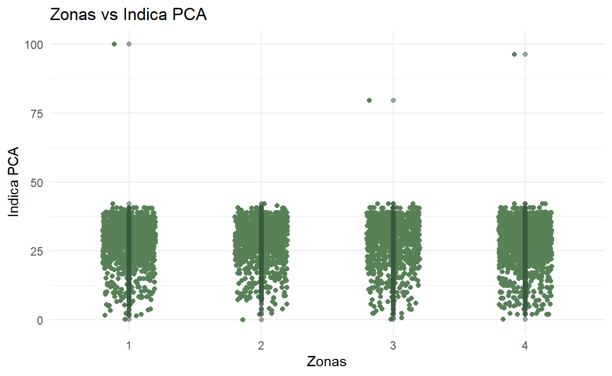
reg_pca_importancia %>%
ggplot(aes(x = as_factor(ZONAS), y = indice_02)) +
geom_jitter(shape = 16, position = position_jitter(0.2), color = "#588157") +
geom_point(fill = "#a3b18a", color = "#3a5a40", alpha = 0.5) +
labs(title = "Zonas vs Indica PCA" ,x = "Zonas", y ="Indica PCA") +
theme_minimal(base_family = "Roboto Condensed")El modelo no parece tener algúna relevancia. Nuestra hipótesis, que la zona puede predecir el nivel de importancia no parece ser valida. El tipo de combustible que alguien tiene un valor-p < 0.05. Sin embargo, para cambiar nuestra hipotesis y cambiar esto hay algunaas cosas que hay que considerar que no todo el mundo tienen un auto. Por esta razon, no se puede filtrar sobre un subgrupo de la populación que tenga vehiculo.
modelo_pca_imp_1 <- lm(indice_01 ~ 1 + ZONAS, data = reg_pca_importancia, na.action = na.exclude)
modelo_pca_imp_2 <- lm(indice_02 ~ 1 + ZONAS, data = reg_pca_importancia, na.action = na.exclude)
modelos_pca_imp <- list(modelo_pca_imp_1, modelo_pca_imp_2)
screenreg(modelos_pca_imp)
=====================================
Model 1 Model 2
-------------------------------------
(Intercept) 28.77 *** 21.13 ***
(0.21) (0.16)
ZONAS -0.02 -0.00
(0.07) (0.06)
-------------------------------------
R^2 0.00 0.00
Adj. R^2 -0.00 -0.00
Num. obs. 6130 6130
=====================================
*** p < 0.001; ** p < 0.01; * p < 0.05modelo_pca_imp_1_2 <- lm(indice_01 ~ 1 + ZONAS + NSE + Edad + Niv_Edu, data = reg_pca_importancia, na.action = na.exclude)
modelo_pca_imp_2_2 <- lm(indice_02 ~ 1 + ZONAS + NSE + Edad + Niv_Edu, data = reg_pca_importancia, na.action = na.exclude)
modelos_pca_imp_2 <- list(modelo_pca_imp_1_2, modelo_pca_imp_2_2)
screenreg(modelos_pca_imp_2)
=====================================
Model 1 Model 2
-------------------------------------
(Intercept) 28.27 *** 20.62 ***
(0.69) (0.53)
ZONAS -0.02 -0.00
(0.07) (0.06)
NSE 0.06 0.07
(0.11) (0.08)
Edad -0.00 -0.00
(0.01) (0.00)
Niv_Edu 0.06 0.06
(0.06) (0.04)
-------------------------------------
R^2 0.00 0.00
Adj. R^2 -0.00 -0.00
Num. obs. 6130 6130
=====================================
*** p < 0.001; ** p < 0.01; * p < 0.05modelo_pca_imp_1_3 <- lm(indice_01 ~ 1 + ZONAS + NSE + Edad + Estudiante + Niv_Edu + Razon_Bici + Trab_Ingr + Religion + Razon_Bici + Automovil_Combustible + Transporte_mas_freq + Religion, data = reg_pca_importancia, na.action = na.exclude)
modelo_pca_imp_2_3 <- lm(indice_02 ~ 1 + ZONAS + NSE + Edad + Estudiante + Niv_Edu + Razon_Bici + Trab_Ingr + Religion + Razon_Bici + Automovil_Combustible + Transporte_mas_freq + Religion, data = reg_pca_importancia, na.action = na.exclude)
modelos_pca_imp_3 <- list(modelo_pca_imp_1_3, modelo_pca_imp_2_3)
screenreg(modelos_pca_imp_3)
===============================================
Model 1 Model 2
-----------------------------------------------
(Intercept) 29.50 *** 21.43 ***
(1.18) (0.90)
ZONAS 0.01 0.04
(0.10) (0.07)
NSE 0.06 0.05
(0.15) (0.11)
Edad -0.01 -0.00
(0.01) (0.01)
Estudiante -0.21 -0.14
(0.34) (0.26)
Niv_Edu -0.02 0.01
(0.08) (0.06)
Razon_Bici 0.05 0.05
(0.04) (0.03)
Trab_Ingr 0.01 0.01
(0.06) (0.05)
Religion 0.05 0.03
(0.06) (0.04)
Automovil_Combustible -0.40 * -0.32 *
(0.17) (0.13)
Transporte_mas_freq 0.04 -0.00
(0.07) (0.05)
-----------------------------------------------
R^2 0.00 0.00
Adj. R^2 -0.00 -0.00
Num. obs. 3602 3602
===============================================
*** p < 0.001; ** p < 0.01; * p < 0.05Cuando solo vemos el uso de combustible, incluyendo variables confundidoras mas relevantes, vemos que ya aun sigue siendo significante esta variable predictiva. Esto los discutimos en la siguiente sección.
modelo_pca_imp_1_4 <- lm(indice_01 ~ 1 + Automovil_Combustible, data = reg_pca_importancia, na.action = na.exclude)
modelo_pca_imp_1_5 <- lm(indice_01 ~ 1 + Automovil_Combustible + Edad + NSE + Niv_Edu, data = reg_pca_importancia, na.action = na.exclude)
modelo_pca_imp_2_4 <- lm(indice_02 ~ 1 + Automovil_Combustible, data = reg_pca_importancia, na.action = na.exclude)
modelo_pca_imp_2_5 <- lm(indice_02 ~ 1 + Automovil_Combustible + Edad + NSE + Niv_Edu, data = reg_pca_importancia, na.action = na.exclude)
modelos_pca_imp_4_5 <- list(modelo_pca_imp_1_4,modelo_pca_imp_1_5,modelo_pca_imp_2_4, modelo_pca_imp_2_5)
screenreg(modelos_pca_imp_4_5)
=========================================================================
Model 1 Model 2 Model 3 Model 4
-------------------------------------------------------------------------
(Intercept) 29.33 *** 29.66 *** 21.60 *** 21.61 ***
(0.24) (0.93) (0.18) (0.71)
Automovil_Combustible -0.39 * -0.38 * -0.31 * -0.31 *
(0.17) (0.17) (0.13) (0.13)
Edad -0.01 -0.01
(0.01) (0.01)
NSE 0.07 0.06
(0.14) (0.11)
Niv_Edu -0.00 0.02
(0.07) (0.06)
-------------------------------------------------------------------------
R^2 0.00 0.00 0.00 0.00
Adj. R^2 0.00 0.00 0.00 0.00
Num. obs. 3636 3636 3636 3636
=========================================================================
*** p < 0.001; ** p < 0.01; * p < 0.05Sin embargo vemos que hay un sesgo hacia la derecha en los valores predichos.
# estimadores <- get_regression_table(modelo_pca_imp_1_5)
# estimadores_obs <- get_regression_points(modelo_pca_imp_1_5)
ggplot(mapping = aes(x = modelo_pca_imp_1_5$fitted.values, y = modelo_pca_imp_1_5$residuals)) +
labs(x = "Valores predichos", y = "Residuos") +
geom_point() +
geom_hline(mapping = aes(yintercept = 0), color = "red")Discusión
Como hemos visto los modelos que creamos no parecen tener una significancia estadistica. Esto significa que tampoco es relevante evaluarlas. Durante este proceso hay algúnas observaciones que merecen una discusión. Esta discusión llevara a una solución para tener un modelo útil, sea porque cambiamos la hipótesis, o porque cambiamos nuestra metodologia.
- La manera en la que creamos el indice puede ser incorrecta. Aunque creamos dos diferentes indices, ambas son amiguas.
- Es posible que otras maneras de crear el indice si muestren una significancia.
- Al incluir variables con poca correlacion afectamos la aplicación del PCA.
- Es dificil determinar la correlación entre variables no-parametricas que intentar cuantificar conceptos. Especificamente, en algunos casos incluimos variables que no tienen correlación porque teoreticamente tienen una relación, aunque no se vea en los datos. Podriamos excluir variables con poca correlación, aunque esto signifique que la latente cambie.
- Podriamos cambiar nuestra variable independiente a una que vea la diferencia entre la región metropolitana y el resto de Chile.
- Chile tiene una distribución de populación muy concentrada en la región metropolitana (RM) por la que la gente de esta región tiene otros problemas ambientales que el resto de Chile. Para esto podriamos:
- 1 crear un PCA nuevo con otras variables dependientes.No lo consideramos por una limitación al tiempo disponible
- 2 crear una columna que indice si la zona es afuera o adentro de la región metropolitana. Despues corremos nuevamente los modelos a ver si la predicción mejora. Lo consideramos por una limitación al tiempo disponible
- Nuestras latentes podrian no estar bien formuladas porque el concepto sigue siendo muy amplio.
- Para esto podriamos enfocarnos en latentes que conceptualmente sean menos ambiguas. Esto podria enfocarse en una latente que tenga una parilla hecha con un alfa de Cronbach alto. No lo consideramos por una limitación al tiempo disponible
- El uso de combustible para el vehiculo tiene una significancia estadistica al predecir el indice de importancia. Sin embargo, tengo la idea que hay otra razon por la que muestra significancia. Una variable que domina ambas variables. Esto podria ser la posesion de tener un auto. Requiere mas investigación. No lo consideramos porque cae afuera del marco teórico de esta investigación
- Puede ser que el modelo funcione para modelo no-lineales. Sin embargo, esto requiere tener un muy buen conocimiento de los conceptos para asi entender lo que el modelo predice.No lo consideramos porque cae afuera del contenido de esta clase
- Corremos Analisis Factorial donde determinamos si se pueden clusterizar algúnos conceptos. Esto nos inspira a crear un PCA del conjunto que crea. Si es asi, bien deberiamos de conseguir un modelo con significancia estadistica, y por esto una posible causalidad.
- Usar Analisis Factorial para determinar si se forman dos latentes del P19 y P21. Incluimos las variables que excluimos anteriormente por el alfa de Cronbach.
Enfoque punto 3
# #RECODING the values
zonas_rec <- reg_pca_total %>%
dplyr::select(ZONAS) %>%
rec(rec= "1=1;2,3,4=0;else=copy",suffix="")
zonas_rec <- reg_pca_importancia %>%
dplyr::select(ZONAS) %>%
rec(rec= "1=1;2,3,4=0;else=copy",suffix="")
zonas_rec <- reg_pca_preocupacion %>%
dplyr::select(ZONAS) %>%
rec(rec= "1=1;2,3,4=0;else=copy",suffix="")
reg_pca_total$Zonas_recoded <- zonas_rec
reg_pca_importancia$Zonas_recoded <- zonas_rec
reg_pca_preocupacion$Zonas_recoded <- zonas_rec
reg_pca_total[] <- lapply(reg_pca_total, function(x) as.numeric(as.character(x)))
reg_pca_total <- do.call(data.frame, reg_pca_total)
reg_pca_importancia[] <- lapply(reg_pca_importancia, function(x) as.numeric(as.character(x)))
reg_pca_importancia <- do.call(data.frame, reg_pca_importancia)
reg_pca_preocupacion[] <- lapply(reg_pca_preocupacion, function(x) as.numeric(as.character(x)))
reg_pca_preocupacion <- do.call(data.frame, reg_pca_preocupacion)reg_pca_importancia %>%
ggplot(aes(x = as_factor(Zonas_recoded), y = indice_01)) +
geom_jitter(shape = 16, position = position_jitter(0.2), color = "#588157") +
geom_point(fill = "#a3b18a", color = "#3a5a40", alpha = 0.5) +
labs(title = "Zonas vs Indice PCA 1" ,x = "Zonas", y ="Indice PCA 1") +
theme_minimal(base_family = "Roboto Condensed")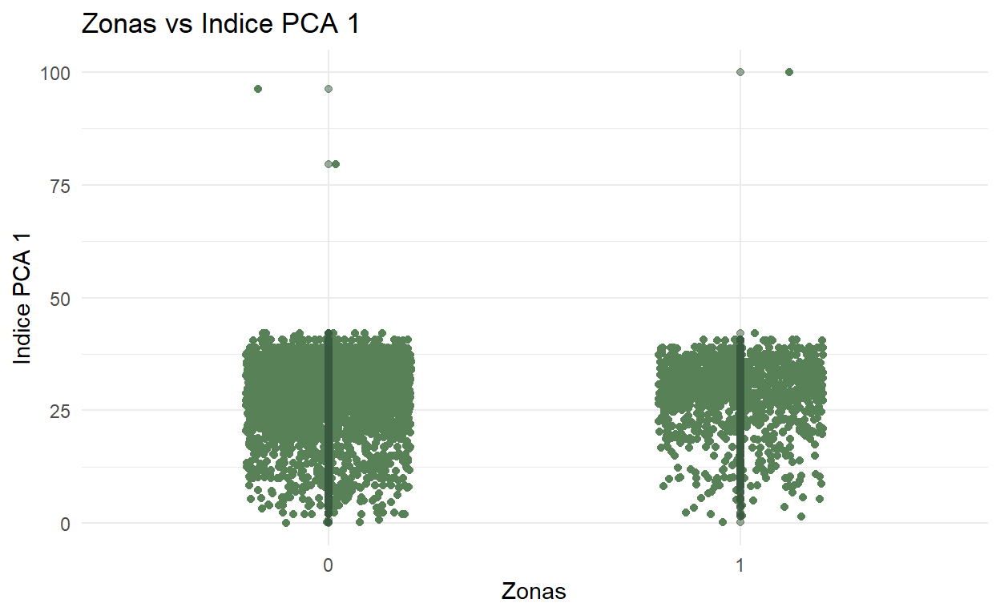
reg_pca_importancia %>%
ggplot(aes(x = as_factor(Zonas_recoded), y = indice_02)) +
geom_jitter(shape = 16, position = position_jitter(0.2), color = "#588157") +
geom_point(fill = "#a3b18a", color = "#3a5a40", alpha = 0.5) +
labs(title = "Zonas vs Indice PCA 2" ,x = "Zonas", y ="Indice PCA 2") +
theme_minimal(base_family = "Roboto Condensed")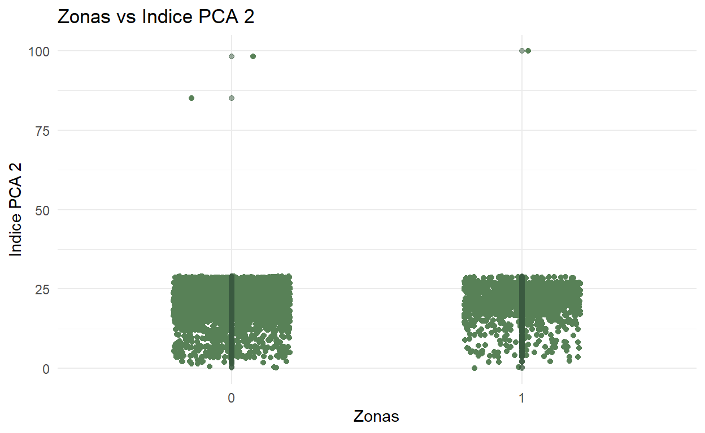
reg_pca_preocupacion %>%
ggplot(aes(x = as_factor(Zonas_recoded), y = indice_01)) +
geom_jitter(shape = 16, position = position_jitter(0.2), color = "#588157") +
geom_point(fill = "#a3b18a", color = "#3a5a40", alpha = 0.5) +
labs(title = "Zonas vs Indice PCA 1" ,x = "Zonas", y ="Indica PCA 1") +
theme_minimal(base_family = "Roboto Condensed")reg_pca_preocupacion %>%
ggplot(aes(x = as_factor(Zonas_recoded), y = indice_02)) +
geom_jitter(shape = 16, position = position_jitter(0.2), color = "#588157") +
geom_point(fill = "#a3b18a", color = "#3a5a40", alpha = 0.5) +
labs(title = "Zonas vs Indice PCA 2" ,x = "Zonas", y ="Indice PCA 2") +
theme_minimal(base_family = "Roboto Condensed")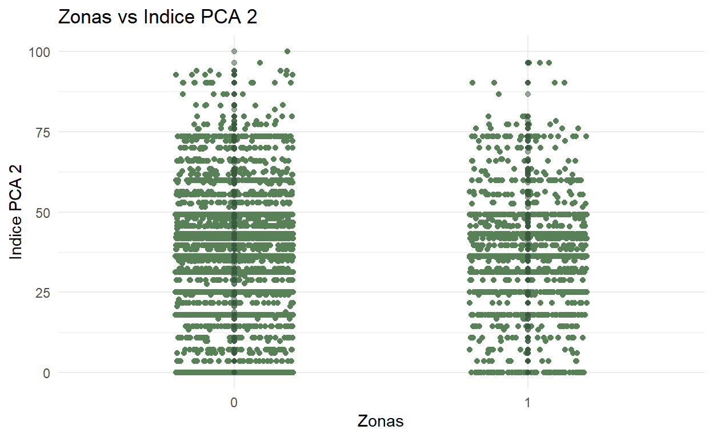
reg_pca_preocupacion %>%
ggplot(aes(x = as_factor(Zonas_recoded), y = indice_01)) +
geom_jitter(shape = 16, position = position_jitter(0.2), color = "#588157") +
geom_point(fill = "#a3b18a", color = "#3a5a40", alpha = 0.5) +
labs(title = "Zonas vs Indice PCA 1" ,x = "Zonas", y ="Indice PCA 1") +
theme_minimal(base_family = "Roboto Condensed")reg_pca_preocupacion %>%
ggplot(aes(x = as_factor(Zonas_recoded), y = indice_02)) +
geom_jitter(shape = 16, position = position_jitter(0.2), color = "#588157") +
geom_point(fill = "#a3b18a", color = "#3a5a40", alpha = 0.5) +
labs(title = "Zonas vs Indice PCA 2" ,x = "Zonas", y ="Indice PCA 2") +
theme_minimal(base_family = "Roboto Condensed")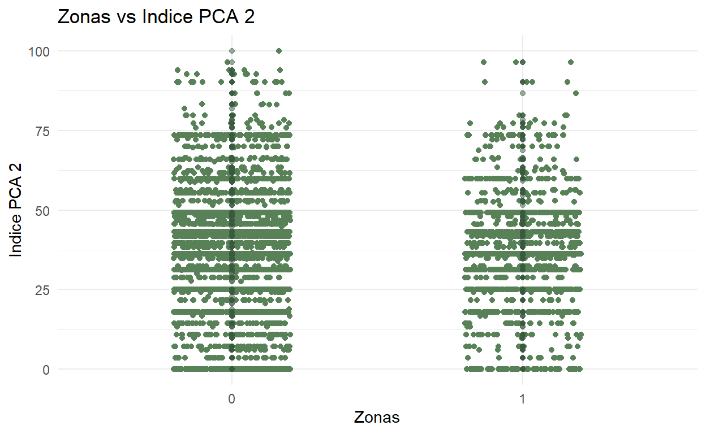
Nada aun. De nuevo el uso de tipo de autocombustible tiene significancia estadistica. Sin embargo, creo que esto es una variable confundidora, ya que hay otra variable que afecta el autocombustible y la percepción.
modelo_pca_preo_enfoque3 <- lm(indice_01 ~ 1 + ZONAS + NSE + Edad + Estudiante + Niv_Edu + Razon_Bici + Trab_Ingr + Religion + Razon_Bici + Automovil_Combustible + Transporte_mas_freq + Religion, data = reg_pca_preocupacion, na.action = na.exclude)
modelo_pca_imp_enfoque3 <- lm(indice_01 ~ 1 + ZONAS + NSE + Edad + Estudiante + Niv_Edu + Razon_Bici + Trab_Ingr + Religion + Razon_Bici + Automovil_Combustible + Transporte_mas_freq + Religion, data = reg_pca_importancia, na.action = na.exclude)
modelo_pca_tot_enfoque3 <- lm(indice_01 ~ 1 + ZONAS + NSE + Edad + Estudiante + Niv_Edu + Razon_Bici + Trab_Ingr + Religion + Razon_Bici + Automovil_Combustible + Transporte_mas_freq + Religion, data = reg_pca_total, na.action = na.exclude)
modelos_pca_enfoque3 <- list(modelo_pca_preo_enfoque3, modelo_pca_imp_enfoque3, modelo_pca_tot_enfoque3)
screenreg(modelos_pca_enfoque3)
============================================================
Model 1 Model 2 Model 3
------------------------------------------------------------
(Intercept) 34.37 *** 29.50 *** 63.51 ***
(2.96) (1.18) (1.91)
ZONAS 0.17 0.01 0.01
(0.24) (0.10) (0.16)
NSE 0.14 0.06 -0.27
(0.37) (0.15) (0.24)
Edad -0.02 -0.01 -0.01
(0.02) (0.01) (0.01)
Estudiante 0.01 -0.21 0.03
(0.86) (0.34) (0.56)
Niv_Edu 0.07 -0.02 -0.08
(0.19) (0.08) (0.12)
Razon_Bici 0.14 0.05 -0.10
(0.11) (0.04) (0.07)
Trab_Ingr 0.13 0.01 0.09
(0.15) (0.06) (0.10)
Religion 0.08 0.05 0.04
(0.15) (0.06) (0.10)
Automovil_Combustible -0.33 -0.40 * 0.04
(0.43) (0.17) (0.28)
Transporte_mas_freq -0.16 0.04 -0.04
(0.18) (0.07) (0.12)
------------------------------------------------------------
R^2 0.00 0.00 0.00
Adj. R^2 -0.00 -0.00 -0.00
Num. obs. 3602 3602 3602
============================================================
*** p < 0.001; ** p < 0.01; * p < 0.05Enfoque punto 2
Enfoque punto 4
Intento con P21_promedio
Nada
zonas_rec <- dep_total_clean %>%
dplyr::select(ZONAS.x) %>%
rec(rec= "1=1;2,3,4=0;else=copy",suffix="")
dep_total_clean$Zonas_recoded <- zonas_rec
dep_total_clean[] <- lapply(dep_total_clean, function(x) {
if(is.factor(x)) as.numeric(as.character(x)) else x
})
dep_total_clean <- do.call(data.frame, dep_total_clean)modelo_P21_promedio_zonas_recoded_enfoque4 <- lm(P21_promedio ~ 1 + Zonas_recoded + NSE + Edad + Estudiante + Niv_Edu + Razon_Bici + Trab_Ingr + Religion + Razon_Bici + Automovil_Combustible + Transporte_mas_freq + Religion, data = dep_total_clean, na.action = na.exclude)
modelo_P21_promedio_zonas_normal_enfoque4 <- lm(P21_promedio ~ 1 + ZONAS.x + NSE + Edad + Estudiante + Niv_Edu + Razon_Bici + Trab_Ingr + Religion + Razon_Bici + Automovil_Combustible + Transporte_mas_freq + Religion, data = dep_total_clean, na.action = na.exclude)
modelos_P21_promedio_enfoque4 <- list(modelo_P21_promedio_zonas_recoded_enfoque4,modelo_P21_promedio_zonas_normal_enfoque4)
screenreg(modelos_P21_promedio_enfoque4)
===============================================
Model 1 Model 2
-----------------------------------------------
(Intercept) 4.20 *** 4.19 ***
(0.18) (0.18)
Zonas_recoded 0.02
(0.04)
NSE 0.02 0.02
(0.02) (0.02)
Edad 0.00 0.00
(0.00) (0.00)
Estudiante -0.07 -0.07
(0.05) (0.05)
Niv_Edu 0.01 0.01
(0.01) (0.01)
Razon_Bici 0.01 0.01
(0.01) (0.01)
Trab_Ingr 0.01 0.01
(0.01) (0.01)
Religion 0.01 0.01
(0.01) (0.01)
Automovil_Combustible -0.06 * -0.06 *
(0.03) (0.03)
Transporte_mas_freq 0.00 0.00
(0.01) (0.01)
ZONAS.x 0.01
(0.01)
-----------------------------------------------
R^2 0.00 0.00
Adj. R^2 0.00 0.00
Num. obs. 2690 2690
===============================================
*** p < 0.001; ** p < 0.01; * p < 0.05Intento con otro analisis de PCA
Parilla 22 Efectividad de acciones (externas/no individuales)
P22A-G ¿Cuán efectivas cree que pueden llegar a hacer las acciones que emprendan para mitigar el cambio climático?: El gobierno y las municipalidades
Parilla 19 Sentimientos
Parilla 29 Politicas que hay que incorporar
Parilla 14 participacion protestas contra cambio climatico
Parilla 6 Acciones personales contra cambio climatico
2 Evaluando los mejores modelos
El AIC mide la distancia que existe entre los parámetros verdaderos y los estimadores del modelo mediante una distancia matemática llamada divergencia Kullback-Leibler. Cuanto más peque帽a sea la distancia, mejor será el modelo.
El BIC, a diferencia del AIC, penaliza la complejidad del modelo más rigurosamente ya que además toma en consideración el número de observaciones de la muestra.
# broom::glance(modelo.lm)Grafico ROC: Lo más importante de la figura es el área debajo de la curva diagonal que la cruza. Sensibilidad: relación entre los verdaderos positivos y la suma de los verdaderos positivos más los falsos negativos. Especificidad: relación entre los verdaderos negativos y la suma de los falsos positivos a los verdaderos negativos. Tener en consideración el cálculo del AUC (rea bajo la Curva): cuanto mayor sea, mejor será el ajuste.
Metodos de evaluación
ANOVA is a statistical test for estimating how a quantitative dependent variable changes according to the levels of one or more categorical independent variables. ANOVA tests whether there is a difference in means of the groups at each level of the independent variable.
Esto lo usamos como recurso final para ver si hay variables que no contienen variacion en relación a otras variables independientes. Por ejemplo, si la [https://www.scribbr.com/statistics/anova-in-r/]
# ¿Cuál es el efecto medio?
#
# marginal_ef <- margins(mod1a)
# plot(marginal_ef)
#
# library(pscl)
#
# # Pseudo R-cuadrado
#
# pR2(mod1b)[["McFadden"]]
#
# # Pseudo R cuadrado ajustado
#
# library(DescTools)
#
# PseudoR2(mod1b, c("McFadden"))3 Creación de clusters
Vemos para multicolinealidad primero que correr el algoritmo de cluster, porque el K-means es sensitivo a producir clusters incorrectos si se construye a base de dos o mas varianzas similares.
El clustering es un metodo que agrupa nuestro indice a base de la distancia entre el valor.
Vamos a formar clusters a base de las preguntas mas importantes de cada latente que analizamos. Es mejor no considerar demasiadas variables
Estandardizamos las variables. En este caso no estandarizamos las variables porque ya tienen una escala de Likert similar.
Corremos un analisis de multicolinealidad.
Analizamos usando cluster
Evaluamos los cluster
Vamos a ver esto por región ya que hay mas regiones que zonas, haciendo la caracterización por clusters mas significativo. Luego a base de los clusters, y por saber a cual zona pertenece una región, decidimos si en verdad la percepción se puede categorizar a base de las zonas. En su forma, es una forma indirecta de ver si podemos categorizar a base de zona usando la región como variable instrumental.
df_var <- read_sav("data/var_dependientes_total.sav")1
Recordamos las columnas que tenemos:
colnames(df_var) [1] "ZONAS" "REGION" "P34" "P33"
[5] "NSE" "P1_MAmb" "P2_COD" "P3F"
[9] "P4" "P17_COD" "P19_1" "P19_2"
[13] "P19_4" "P19_4.1" "P19_5" "P19_6"
[17] "P19_7" "P19_8" "P19_suma" "P20"
[21] "P21B" "P21C" "P21D" "P21_promedio"
[25] "P30" Para disminuir la influencia que tiene la caracterización a base de variables que no son significativas, formamos varios conceptos de las variables que podrian estar asociadas para la formación de un concepto. Formamos estos clusters a base de una mezcla de analisis cualitativo y cuantitativo. Vemos los conceptos que van juntos con las variables (1), y vemos las dimensiones que conseguimos anteriormente (2). Analizamos 1 y 2 separadamente y vemos si hay alguna consistencia en los resuktados que nos da la clusterización.
- Indice de PCA formado
- P1_MAmb (importancia relativa), P21D (importancia absoluta)
- P19_2 (preocupación), P3F (calidad medio ambiente), P19_1 (Tristeza)
- Todo: P1_MAmb, P3F, P19_2, P21D, P19_1
- Dimension 1 (Sentimientos de preocupación hacia el cambio climatico)
- Dimension 4 (Percepcion hacia problemas ambientales del medio ambiente de la región)
#clusters
region_1 <- df_var %>% dplyr::select(REGION,P1_MAmb, P21D)
region_2 <- df_var %>% dplyr::select(REGION,P19_2, P3F, P19_1)
region_3 <- df_var %>% dplyr::select(REGION,P19_2, P3F, P19_1,P1_MAmb, P21D)
zonas_1 <- df_var %>% dplyr::select(ZONAS,P1_MAmb, P21D)
zonas_2 <- df_var %>% dplyr::select(ZONAS,P19_2, P3F, P19_1)
zonas_3 <- df_var %>% dplyr::select(ZONAS,P19_2, P3F, P19_1,P1_MAmb, P21D)
edad_3 <- df_var %>% dplyr::select(P33,P19_2, P3F, P19_1,P1_MAmb, P21D)
nse_3 <- df_var %>% dplyr::select(NSE,P19_2, P3F, P19_1,P1_MAmb, P21D)
edu_3 <- df_var %>% dplyr::select(P34,P19_2, P3F, P19_1,P1_MAmb, P21D)2
3
Hay mucho NA (>5%)
# library(mice)
#
# md.pattern(region_3)
#
# aggr_plot <- mice:aggr(region_3)Removemos las columnas con NA ya que no hay manera correcta de imputar sin tener un analisis profundo.
Nada de que preocuparnos. No hay multicolinealidad.
REGION P3F P1_MAmb
REGION 1.00000000 -0.026195487 0.013544075
P3F -0.02619549 1.000000000 -0.002105683
P1_MAmb 0.01354407 -0.002105683 1.000000000ggcorr(region_3, label = T) #NA se omiten automáticamente ZONAS P3F P1_MAmb
ZONAS 1.000000000 -0.084019245 -0.008959161
P3F -0.084019245 1.000000000 -0.002105683
P1_MAmb -0.008959161 -0.002105683 1.000000000ggcorr(zonas_3, label = T) #NA se omiten automáticamente4
Región
Interesantemente, para la regiones parece no formar un cluster optimo. El sum of squares inter-clusters es muy bajo, por lo que hay mucho superposición entre los diferentes clusters. Tampoco forma un cluster optimo en cuatro clusters, el número ideal si se podria caracterizar a base de zonas.
k1 <- kmeansruns(region_3, krange = 3, runs = 100)
# Suma de errores al cuadrado entre clusters: la separación entre los clusters explica el 47.5% de los datos
fviz_cluster(k1, data = region_3)d <- dist(region_3, method = "euclidean")Método de codos
fviz_nbclust(region_3, kmeans, method = "wss") +
labs(subtitle = "Método codos")Método de brecha estadística
No lo corremos porque no converge.
Método de silueta promedio
fviz_nbclust(region_3, kmeans, method = "silhouette") +
labs(subtitle = "Método de silueta promedio")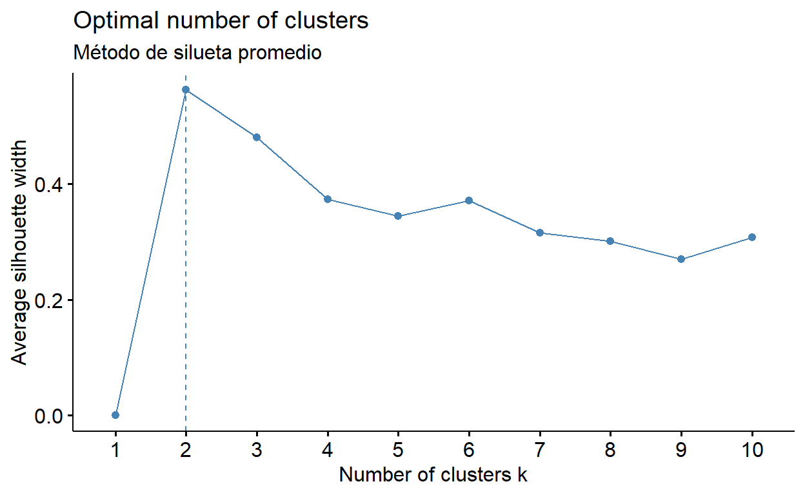
Metodo completo
No converge.
Zonas
Hay demasiada diferencia intra-cluster, y muy poca diferencia inter-cluster. Hay aún alguna superposición. Es decir no se puede caracterizar a base de zonas.
k2 <- kmeansruns(zonas_3, krange = 4, runs = 100)
# Suma de errores al cuadrado entre clusters: la separación entre los clusters explica el 47.5% de los datos
fviz_cluster(k2, data = zonas_3)Método de codos
Indica k optimo es 10.
fviz_nbclust(zonas_3, kmeans, method = "wss") +
labs(subtitle = "Método codos")Método de silueta promedio
Indica k optimo es 10.
fviz_nbclust(zonas_3, kmeans, method = "silhouette") +
labs(subtitle = "Método de silueta promedio")IMAGINEMOS.
Imaginiemos que nada es correcto en nuestra hipótesis y que tenemos que ir a zero. Que no caracterizamos a base de indicadores espaciales. Caracterizamos a base de nuestras variables de control que conceptualmente eran las que eran ciertas. Es decir, caracterizamos a base de la Edad, el Nivel socio-económico, el Nivel de educación. Vamos a ver que tal!
Edad
Tampoco se pueden dividir clusters a base de la edad. No hay caracterización que hacer entre personas de diferentes edades.
Entre cluster 1, y 2 si hay alguna diferencia interesante.
k3 <- kmeansruns(edad_3, krange = 3, runs = 100)
# Suma de errores al cuadrado entre clusters: la separación entre los clusters explica el 47.5% de los datos
fviz_cluster(k3, data = edad_3)
Método de codos
Indica k optimo es 3.
fviz_nbclust(edad_3, kmeans, method = "wss") +
labs(subtitle = "Método codos")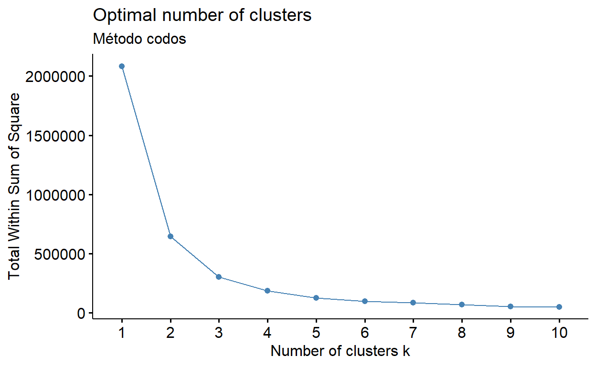
Método de silueta promedio
Indica k optimo es 2.
fviz_nbclust(edad_3, kmeans, method = "silhouette") +
labs(subtitle = "Método de silueta promedio")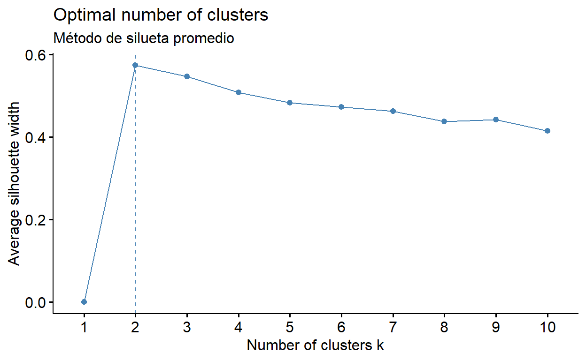
Nivel socio-económico
Partimos el k clusters en 5, a pesar del algoritmo, ya que hay solo 5 maneras de caracterizar el NSE. Aún asi vemos que hay mucha superposición entre algúnos clusters.
Entre 1,2,5 si hay una diferencia que se podria investigar.
k4 <- kmeansruns(nse_3, krange = 5, runs = 100)
# Suma de errores al cuadrado entre clusters: la separación entre los clusters explica el 47.5% de los datos
fviz_cluster(k4, data = nse_3)Metodo de codos
Indica k optimo es 10.
fviz_nbclust(nse_3, kmeans, method = "wss") +
labs(subtitle = "Método codos")Método de silueta promedio
Indica k optimo es 10.
fviz_nbclust(nse_3, kmeans, method = "silhouette") +
labs(subtitle = "Método de silueta promedio")Nivel de educacion
Demasiada superposición. El sum of squares intra-cluster y inter-cluster tampoco es muy buena. Especialmente inter-cluster no esta muy bueno.
k5 <- kmeansruns(edu_3, krange = 10, runs = 100)
# Suma de errores al cuadrado entre clusters: la separación entre los clusters explica el 47.5% de los datos
fviz_cluster(k5, data = edu_3)Metodo de codos
Indica k optimo es 10.
fviz_nbclust(edu_3, kmeans, method = "wss") +
labs(subtitle = "Método codos")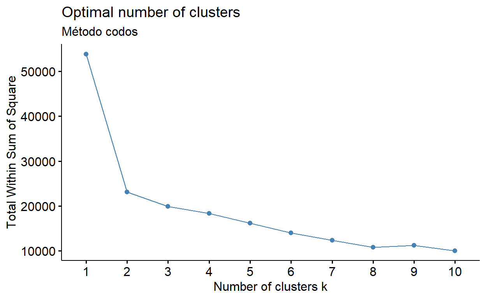
Método de silueta promedio
Indica k optimo es 2.
fviz_nbclust(edu_3, kmeans, method = "silhouette") +
labs(subtitle = "Método de silueta promedio")5
Bueno, podemos decir que hay unos clusters de baja calidad, pero de algúna calidad sin embargo para Nivel socio-económico. Parece haber una diferencia significativa entre grupos 1,2,5.
COMO INVESTIGAMOS ESTO AHORA?
Modelo regresión ordinal/nominal P21D
- Según su percepción, ¿cuán importante es el cambio climático para usted?
Modelo regresión logistica ordinal P1_MAmb
# modelo_log_p1_control_1 <- as.factor(P1_MAmb) ~ 1 + ZONAS.x + NSE + Edad + Estudiante + Niv_Edu + Razon_Bici
# modelo_log_p1_sin_control <- as.factor(P1_MAmb) ~ 1 + ZONAS.x
# modelo_log_p1_control_2 <- as.factor(P1_MAmb) ~ 1 + ZONAS.x + NSE + Edad
# modelo_log_p1_control_3 <- as.factor(P1_MAmb) ~ 1 + ZONAS.x + NSE + Edad + Estudiante + Niv_Edu + Religion + Razon_Bici + Transporte_mas_freq + Trab_Ingr
#
#
# mod_log_p1_control_1 <- polr(modelo_log_p1_control_1, method= c("logistic"), data = reg_total_clean, na.action = na.exclude)
# mod_log_p1_sin_control <- polr(modelo_log_p1_sin_control, method= c("logistic"), data = reg_total_clean, na.action = na.exclude)
# mod_log_p1_control_2 <- polr(modelo_log_p1_control_2, method= c("logistic"), data = reg_total_clean, na.action = na.exclude)
# mod_log_p1_control_3 <- polr(modelo_log_p1_control_3, method= c("logistic"), data = reg_total_clean, na.action = na.exclude)
#
# modelos_p1 <- list(mod_log_p1_control_1, mod_log_p1_control_2, mod_log_p1_control_3, mod_log_p1_sin_control)
#
# screenreg(modelos_p1)Modelo regresión logistica nominal P2
# modelo_log_p2_control_1 <- as.factor(P2_COD) ~ 1 + ZONAS.x + NSE + Edad + Estudiante + Niv_Edu + Razon_Bici
# modelo_log_p2_sin_control <- as.factor(P2_COD) ~ 1 + ZONAS.x
# modelo_log_p2_control_2 <- as.factor(P2_COD) ~ 1 + ZONAS.x + NSE + Edad
# modelo_log_p2_control_3 <- as.factor(P2_COD) ~ 1 + ZONAS.x + NSE + Edad + Estudiante + Niv_Edu + Religion + Razon_Bici + Transporte_mas_freq + Trab_Ingr
#
#
# mod_log_p2_control_1 <- multinom(modelo_log_p2_control_1, data = reg_total_clean, na.action = na.exclude)
# mod_log_p2_sin_control <- multinom(modelo_log_p2_sin_control, data = reg_total_clean, na.action = na.exclude)
# mod_log_p2_control_2 <- multinom(modelo_log_p2_control_2, data = reg_total_clean, na.action = na.exclude)
# mod_log_p2_control_3 <- multinom(modelo_log_p2_control_3, data = reg_total_clean, na.action = na.exclude)
#
#
#
#
# modelos_p2 <- list(mod_log_p2_control_1, mod_log_p2_control_2, mod_log_p2_control_3, mod_log_p2_sin_control)
#
# screenreg(modelos_p2)Modelo regresión logistica nominal P17
# modelo_log_p17_control_1 <- as.factor(P2_COD) ~ 1 + ZONAS.x + NSE + Edad + Estudiante + Niv_Edu + Razon_Bici
# modelo_log_p17_sin_control <- as.factor(P2_COD) ~ 1 + ZONAS.x
# modelo_log_p17_control_2 <- as.factor(P2_COD) ~ 1 + ZONAS.x + NSE + Edad
# modelo_log_p17_control_3 <- as.factor(P2_COD) ~ 1 + ZONAS.x + NSE + Edad + Estudiante + Niv_Edu + Religion + Razon_Bici + Transporte_mas_freq + Trab_Ingr
#
#
# mod_log_p17_control_1 <- multinom(modelo_log_p17_control_1, data = reg_total_clean, na.action = na.exclude)
# mod_log_p17_sin_control <- multinom(modelo_log_p17_sin_control, data = reg_total_clean, na.action = na.exclude)
# mod_log_p17_control_2 <- multinom(modelo_log_p17_control_2, data = reg_total_clean, na.action = na.exclude)
# mod_log_p17_control_3 <- multinom(modelo_log_p17_control_3, data = reg_total_clean, na.action = na.exclude)
#
#
#
#
# modelos_p17 <- list(mod_log_p17_control_1, mod_log_p17_control_2, mod_log_p17_control_3, mod_log_p17_sin_control)
#
# screenreg(modelos_p17)Modelo regresión ordinal/nominal P21 promedio (B, C y D)
- PromedioSegún su percepción, ¿cuán importante es el cambio climático para?: su región (B), familia y amigos (C), usted (D)
Modelo regresión lineal multiple P21 PCA (B, C y D)
Modelo regresión nominal P2 (Como afecta el medio ambiente)
- Según su percepción, ¿cuál es el principal problema ambiental que lo afecta a Ud.? (codificado)